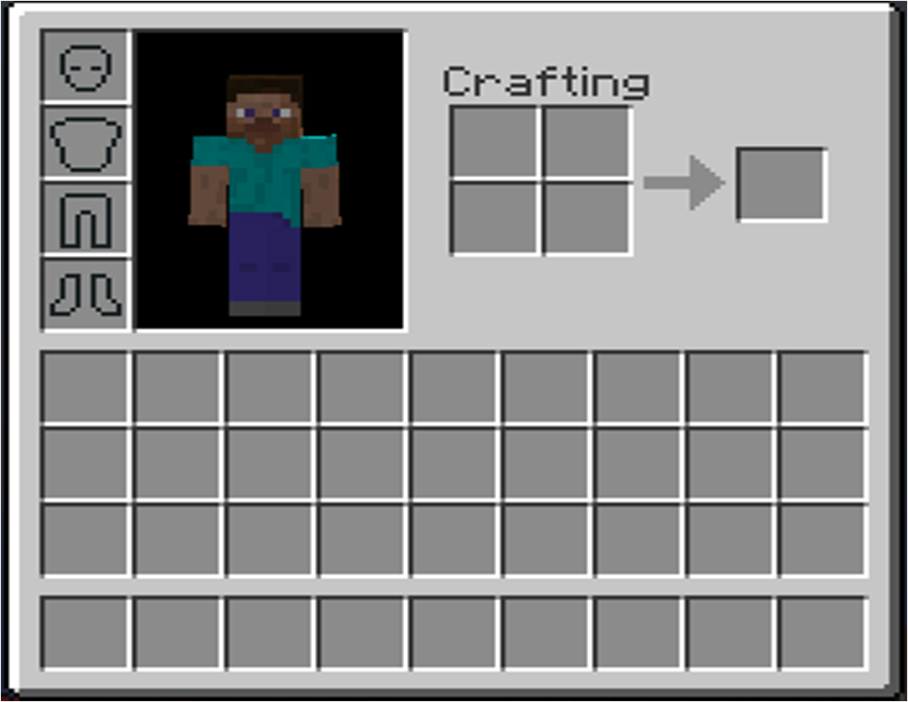
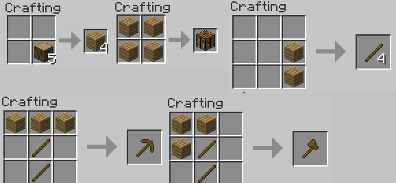

The most basic aspects of minecraft are mining, building, and crafting. First, you will spawn in a world without any items, and you will need to break logs to get wood. You can break blocks by holding down left click, and you can place them, or access them by right clicking. The next thing you have to do is called crafting. Hit the "e" key to access your inventory.

There is a 2x2 crafting square in the top right. You can place wood logs inside it to get the option to turn them into wood planks. Then you can put all four of those wooden planks in to get a crafting table, which when accessed(right clicked), will show a 3x3 crafting square, so you can make more items using that.

These are the most basic crafting recipes. They are the same to make the same tools with different materials. For example, if you used a different type of wood, you will still get a pickaxe, even if you mix and match wood. You can't mix and match materials like stone and wood though. As you can see, most of the crafting recipes in Minecraft are shaped like the tool you are trying to craft. In the top left, it shows how to make wooden planks using logs. The 5 next to the logs means there are 5 logs in the crafting square, the 4 next to the planks means you will get 4 planks for each log you craft into planks.
The next one, top-middle, shows how to make a crafting table with planks. You need a crafting table to craft anything that takes more than a 3x3 space.